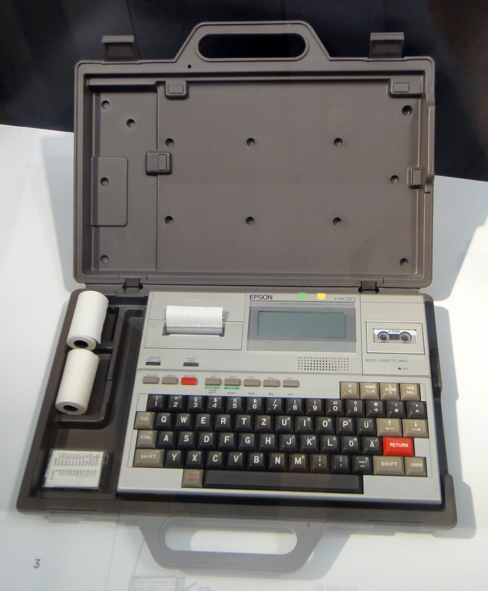
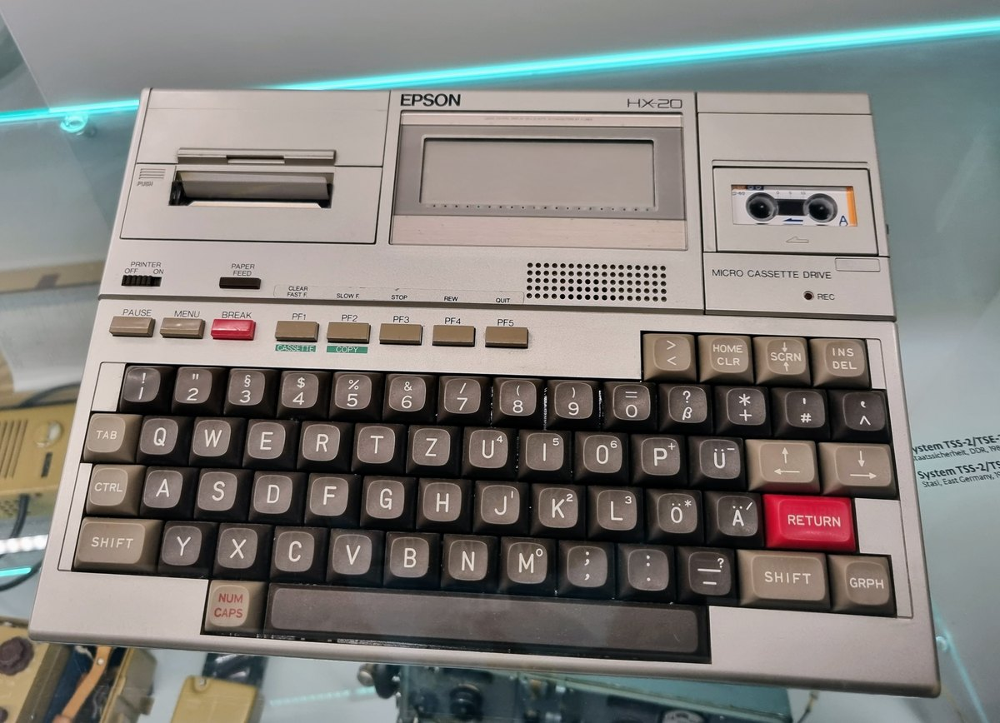

1981
Seiko Epson / Suwa Seikosha — Yukio Yokozawa
Epson HX-20
The world's first notebook computer, with a built-in microprinter that collapses field data and hard copy into one workflow

Overview
Deep dive
Media

